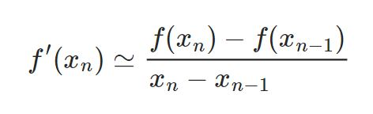
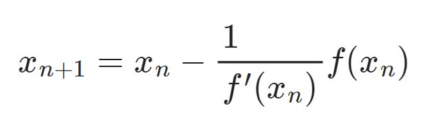
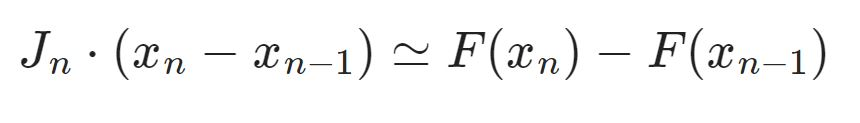
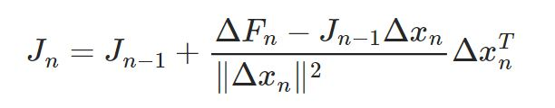
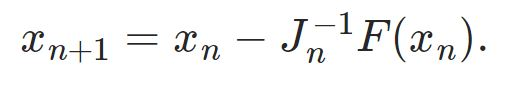
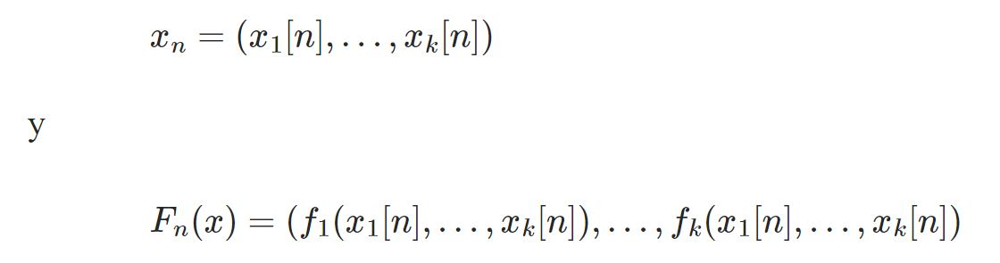
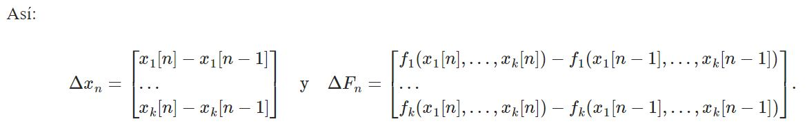
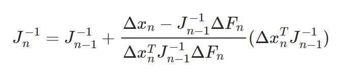
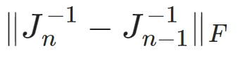
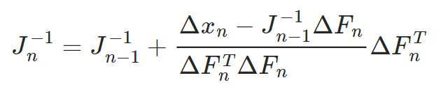

Método de Broyden
En análisis numérico, el método de Broyden es un método cuasinewtoniano para la solución numérica de sistemas ecuaciones no lineales con más de una variable. Fue descrito originalmente por C. G. Broyden en 1965.[1]
Para hallar la solución del sistema de ecuaciones Fi(X1, X2,...,Xn)=0, i = 1,2,...,n, el método de Newton emplea el jacobiano en cada iteración, además de calcular su inversa. Sin embargo, computar ese jacobiano es una operación difícil y costosa. La idea que subyace en el método de Broyden consiste en computar el jacobiano entero solamente en la primera iteración, y llevar a cabo una actualización de rango 1 en las demás iteraciones.
Fi(X1, X2,...,Xn) se supone continua y diferenciable en un conjunto abierto en R^n con derivadas parciales continuas en ese abierto.
En 1979, Gay demostró que, cuando se aplica el método de Broyden a un sistema lineal, se requieren 2n pasos.
|  |
y procede según el método de Newton:
|  |
Broyden establece una generalización de esa fórmula para un sistema de ecuaciones mediante una sustitución de
1 / F´(Xn) por la inversa del jacobiano J. Este se determina por medio de la ecuación de la secante (la aproximación de diferencia finita
|  |
Sin embargo, esta ecuación está infradeterminada por más de una dimensión.
Broyden sugiere un procedimiento que consta de los siguientes 3 pasos:
1) Emplear la aproximación del jacobiano Jn-1
2) Tomar la solución de la ecuación de la secante que suponga la modificación mínima de Jn-1(entendiendo por mínima que se dé una minimización de la norma de Frobenius ||Jn-Jn-1||
|  |
3) Continuar según el método de Newton:
|  |
En esa última fórmula,
|  |
son vectores columna de k elementos en un sistema de k dimensiones.
|  |
Broyden sugiere también la fórmula de Sherman-Morrison para actualizar directamente el inverso de la aproximación del jacobiano por la aproximación de diferencia finita:
|  |
Este último se conoce como el « buen método de Broyden.
Se puede obtener a partir de él una técnica similar empleando una modificación ligeramente distinta de Jn-1 que minimiza en su lugar
|  |
Tal sería el llamado « mal método de Broyden:
|  |
Aquí puedes descargar el Código, el cual fue desarrollado en el lenguaje de Python, si tu computadora no tiene descargado algún compilador compatible con el lenguaje puedes ir a nuestra sección de como descargar el compilador que recomendamos para su uso.
Presiona el link para descargar el algoritmo.
*** Método de Broyden ***